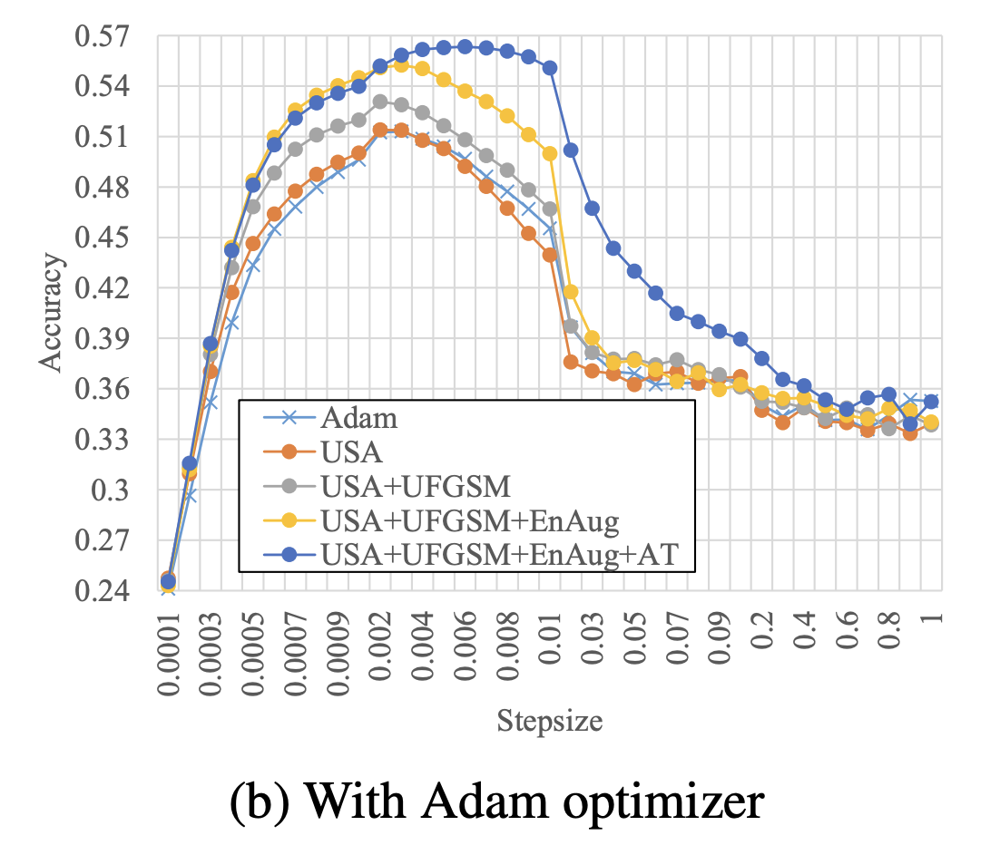
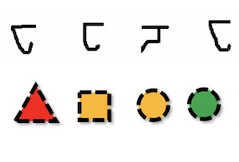
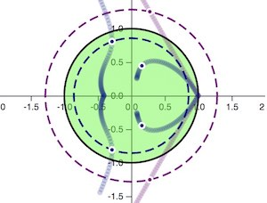
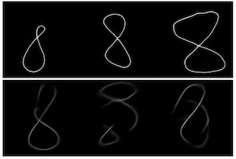
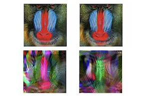

arxiv
A Survey of Self-Supervised and Few-Shot Object Detection
Gabriel Huang, Issam Laradji, David Vazquez, Simon Lacoste-Julien, Pau Rodriguez
Submitted to IEEE TPAMI.
Gabriel Huang is a PhD candidate at Mila & University of Montreal under the supervision of Simon Lacoste-Julien. He is interested in generative learning, latent-variable models, structured prediction, optimal transport, weakly-supervised learning, reinforcement learning, convex optimization, music generation, and fundamental questions of optimization and statistical learning. Previously he did the MVA Master's degree in machine learning at École Normale Supérieure in Paris, in parallel with an engineer's degree at CentraleSupélec, one of the top engineering schools in France. While he was doing his master's, I also worked as a part-time research apprentice on human activity recognition using RGB-D cameras and on recommender systems.
Negative Momentum
Below is an interactive visualization of our paper Negative Momentum for Improved Game Dynamics:
(a) Learning rate (lr) and momentum (beta) hyperparameters.
(b) Resulting eigenvalues in the complex plane for SGD and SGD+momentum.
There is convergence if and only if all eigenvalues are inside the convergence ball (green).
Try to find the hyperparameters for convergence.
SGD without momentum: using ,
eigenvalues are the convergence ball →
SGD with momentum: using
and momentum ,
eigenvalues are the convergence ball →
Publications and preprints


paper
Repurposing Pretrained Models for Robust Out-of-domain Few-Shot Learning
Namyeong Kwon, Hwidong Na, Gabriel Huang, Simon Lacoste-Julien
ICLR'21 paper.
Namyeong Kwon, Hwidong Na, Gabriel Huang, Simon Lacoste-Julien
ICLR'21 paper.


arXiv
Are Few-Shot Learning Benchmarks too Simple ? Solving them without Task Supervision at Test-Time
This paper introduces Centroid Networks for Few-shot Clustering and Unsupervised Few-shot Classification
Gabriel Huang, Hugo Larochelle, Simon Lacoste-Julien
ICLR'19 workshop.
This paper introduces Centroid Networks for Few-shot Clustering and Unsupervised Few-shot Classification
Gabriel Huang, Hugo Larochelle, Simon Lacoste-Julien
ICLR'19 workshop.

paper
Negative Momentum for Improved Game Dynamics
Gauthier Gidel, Reyhane Askari Hemmat, Mohammad Pezeshki, Gabriel Huang, Rémi Lepriol, Simon Lacoste-Julien, Ioannis Mitliagkas.
AISTATS 2019
Gauthier Gidel, Reyhane Askari Hemmat, Mohammad Pezeshki, Gabriel Huang, Rémi Lepriol, Simon Lacoste-Julien, Ioannis Mitliagkas.
AISTATS 2019

arXiv
Parametric Adversarial Divergences are Good Task Losses for Generative Modeling
Gabriel Huang, Hugo Berard, Ahmed Touati, Gauthier Gidel, Pascal Vincent, Simon Lacoste-Julien.
ICML'17 Workshop, ICLR'18 Workshop, Montreal AI Symposium 2018, Submitted to JMLR
Gabriel Huang, Hugo Berard, Ahmed Touati, Gauthier Gidel, Pascal Vincent, Simon Lacoste-Julien.
ICML'17 Workshop, ICLR'18 Workshop, Montreal AI Symposium 2018, Submitted to JMLR

paper
Scattering Networks for Hybrid Representation Learning
Edouard Oyallon, Sergey Zagoruyko, Gabriel Huang, Nikos Komodakis, Simon Lacoste-Julien, Matthew Blaschko, Eugene Belilovsky.
IEEE Transactions on Pattern Analysis and Machine Intelligence (TPAMI) 2018
Edouard Oyallon, Sergey Zagoruyko, Gabriel Huang, Nikos Komodakis, Simon Lacoste-Julien, Matthew Blaschko, Eugene Belilovsky.
IEEE Transactions on Pattern Analysis and Machine Intelligence (TPAMI) 2018
Thin-8 dataset
The Thin-8 dataset consists of 1585 grayscale handwritten images of the digit 8, with resolution 512x512.
16 people were asked to draw the digit 8 about 100 times using a pen on a tablet PC running Microsoft Windows.
It was collected in October 2017 at the University of Montreal.
Download Thin-8 dataset here
If you use the Thin-8 dataset, please cite our paper :
@article{huang2018parametric,
title={Parametric Adversarial Divergences are Good Task Losses for Generative Modeling},
author={Huang, Gabriel and Berard, Hugo and Touati, Ahmed and Gidel, Gauthier and Vincent, Pascal and Lacoste-Julien, Simon},
journal={arXiv preprint arXiv:1708.02511},
year={2017}
}Thanks to Alex, Akram, Aristide, David, Dendi, Eugene, Jae, Joao, Liam, Rémi, Rosemary, Shawn, Sina, and Xing for scribbling all those samples!
Contact
Email: gabriel.huang@umontreal.ca
In person: Mila, 6666 St-Urbain, #200, Montreal, QC, H2S 3H1, Canada